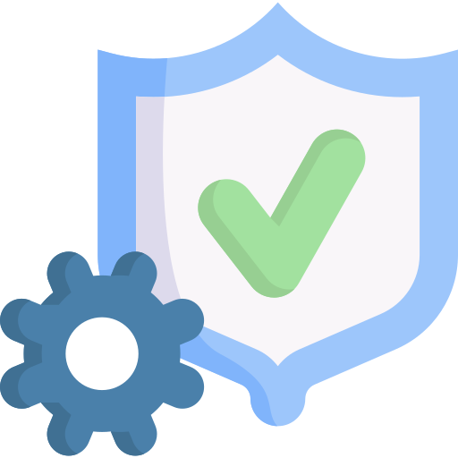

Hello.
I'm Jatin. A QA Engineer. I also have a passion for Website
Development.
Education

BM Institute of Engineering and Technology, Sonepat
Affiliated to Guru Gobind Singh Indraprastha University, New Delhi
B.Tech in Computer Science and Engineering (August-2017 to
August-2021)
CGPA: 7.6
Work

SEI Investments
QA Engineer 1
-
An year of experience in Financial Services & Automation Tester with
emphasis on both Manual and Automation testing efforts.
-
Responsible to create and maintain automation testing scripts using
Taiko (Open Source Framework) and TestComplete (Paid Automation
Tool) that covers major business processes like Mutual Funds,
Equity, Investments etc on Windows platform.
-
Thorough knowledge of all phases of Software Development Life Cycle.
-
Performed Functional Testing, Regression Testing and GUI Testing.
-
Understood testing of Client/Server and Web Based Applications.
-
Sound knowledge of Stock Market, Trading, Mutual Funds, Equities.
-
Proficiently wrote and execute SQL queries using joins and SQL
functions to perform backend testing.